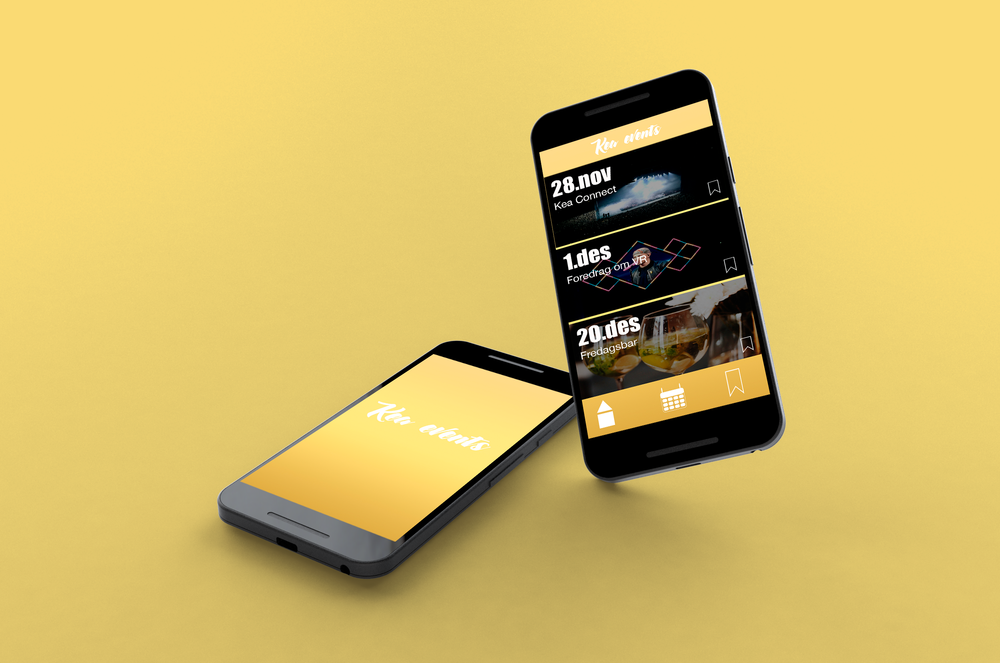

KEA APP

klik på logo for komme til præsentations site

I denne opgave blev vi bedt om at lave en app til de studerne på KEA.
Appen skulle opfylde kravet de studerne havde stillet.
Kundecase (Republikken)
For at kommetil præsentation af appen - klik på billed
I denne opgave blev bedt om at lave en app til virksomheden Republikken
Republikken ønskede at få en privat at til deres kunder, som skulle gøre det mere overskueligt at se ledige lokaler og lettere at få folk til at kunne kommunikere i blandt dem som arbejde på lokation.
Kundecase (Joe & the juice)
klik her for at komme til præsentationen
Denne opgave fik vi stillet kravet om at forbedre Joe & The Juice loyalty app
kravet var at vi ikke måtte ændre konceptet men videre udvikle på appen,og vi skulle finde en måde at beholde de nuværende kunder